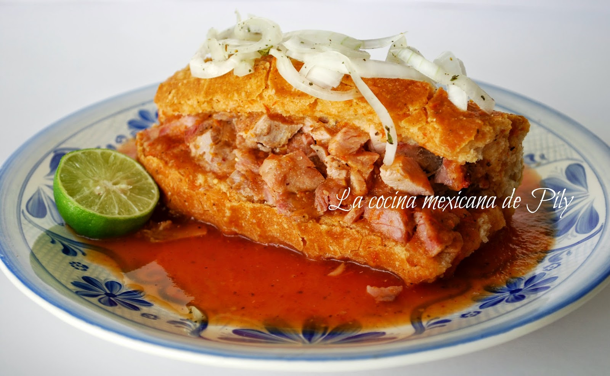
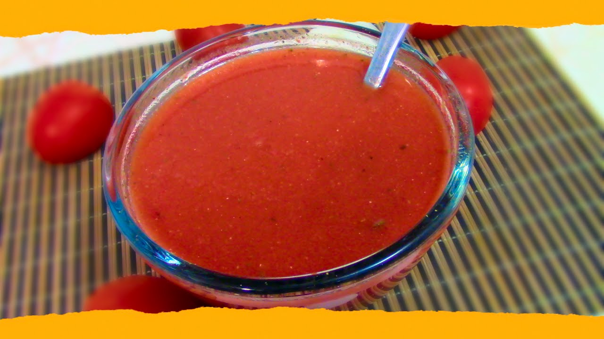

Torta Ahogada Tapatía
La torta ahogada es el platillo más representativo de Guadalajara, Jalisco.
Se prepara con birote salado relleno de carnitas y bañado en salsa de jitomate.
Porciones: 4 tortas | Tiempo: 45 minutos

Ingredientes
Para la torta
- 4 birotes salados
- 500 g de carnitas de cerdo
- 1 taza de frijoles refritos (opcional)
- 1 cebolla morada fileteada
- 2 limones
Para la salsa de jitomate
- 6 jitomates
- 1/4 de cebolla blanca
- 1 diente de ajo
- 1 cucharadita de orégano
- Sal al gusto
Para la salsa picante
- 15 chiles de árbol secos
- 1/2 taza de vinagre blanco
- 1 diente de ajo
- Sal al gusto

Preparación
- Hierve los jitomates, la cebolla y el ajo durante 10 minutos.
- Licúa lo anterior con un poco del agua de cocción, el orégano y sal. Cuela y reserva caliente.
- Remoja los chiles de árbol en el vinagre por 15 minutos y licúalos con el ajo y sal.
- Abre los birotes a lo largo, úntalos con frijoles y rellénalos con las carnitas.
- Coloca cada torta en un plato hondo y báñala con la salsa de jitomate.
- Agrega salsa picante al gusto, cebolla morada y unas gotas de limón.
Consejos
Si quieres una torta media ahogada, baña solo la mitad del birote.
El birote salado es clave: su corteza dura evita que el pan se deshaga en la salsa.
Video de la receta
Mira el paso a paso en video:
Ver video de la receta de torta ahogada